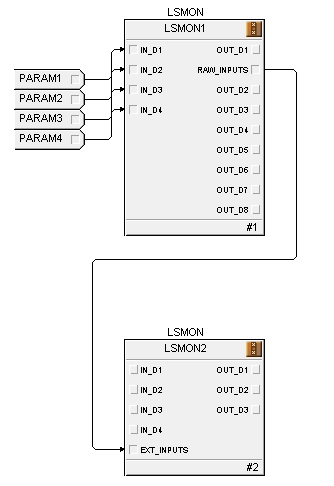
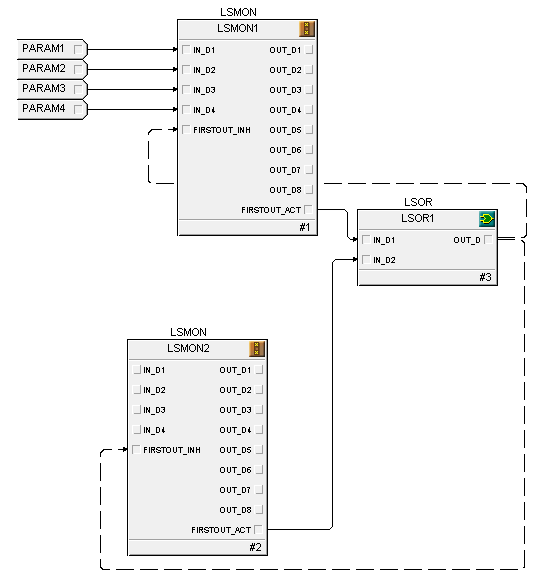

Logic Solver Monitor function block execution
The LSMON block provides the logic for one or more safety instrumented functions (SIF).
The block accepts as many as 32 Boolean input values and, based on a user-configured matrix, generates as many as 8 Boolean output values.
The matrix consists of one row for each input and a column for each output. Any bit set in the matrix indicates that the corresponding input, when in the tripped state, causes the output for that row to go to a tripped state. You can use an input in multiple output masks.
To accommodate both positive (energize to actuate) and negative (deeenergize to actuate) logic, the user defines the tripped state as either TRUE (positive logic) or FALSE (negative logic) using the LOGIC_TYPE parameter. This enables the block to be used in both ESD and F&G applications.
Manipulate the parameter INPUT_MASK to prevent one or more causes from becoming active under certain process conditions. Setting a bit in INPUT_MASK to True prevents the corresponding IN_Dn from tripping any associated effects.
After the INPUT_MASK has been applied, the block generates a SIS event record whenever an input changes to or from the tripped state. The block also generates a SIS event record whenever a value of an OUT_Dx parameter changes. If an OUT_Dx parameter changes to the tripped value, then the event includes a list of all the active inputs that caused the trip. You can suppress these events using the REPORT_OPTS parameter.
If you need more than eight outputs from a set of inputs, you can use the RAW_INPUTS or MASKED_INPUTS parameter wired to the EXT_INPUTS input parameter of another block.
RAW_INPUTS and MASKED_INPUTS are 32-bit parameters that represent the current input values with and without the INPUT_MASK parameter being taken into account. RAW_INPUTS does not take the INPUT_MASK into account. MASKED_INPUTS does take the INPUT_MASK into account.
For example, if you want to drive 11 outputs from four inputs, rather than wiring the four inputs to two blocks, you can wire a RAW_INPUTS or MASKED_INPUTS parameter from the first LSMON block to the EXT_INPUTS parameter on the second LSMON block.

After wiring the blocks together, you would configure configure the MATRIX parameter for each block, The matrix for LSMON1 contains eight outputs. The matrix for LSMON2 contains three outputs.
If you use MASKED_INPUTS rather than RAW_INPUTS, any input to the first block that is masked using INPUT_MASK on the the first block is also masked in the second block.
First out trap
The LSMON block supports first out trapping. First out trapping captures which inputs changed to tripped when no first out has been trapped. Once a first out has been saved into the FIRSTOUT_VAL parameter it remains latched until the value is cleared and the FIRSTOUT_ACT parameter is set to true. The block clears the value of FIRSTOUT_VAL based on the value of the FIRSTOUT_OPT parameter. You configure FIRSTOUT_OPT as Clear on Normal, Clear on Reset If Normal and Clear on Reset.
Clear on Normal automatically clears the FIRSTOUT_VAL parameter when no inputs are tripped. In this case, if there is a condition that causes a trip that immediately clears, FIRSTOUT_VAL is only set temporarily.
Clear on Reset If Normal clears FIRSTOUT_VAL only if the FIRSTOUT_RESET parameter goes TRUE when no inputs are tripped. In this case a momentary input would be latched until the user sets the FIRSTOUT_RESET parameter.
Clear on Reset clears FIRSTOUT_VAL no matter what the current inputs are. This enables you to capture the FIRSTOUT_VAL and set the FIRSTOUT_RESET parameter on the block each scan, in effect capturing a sequence of events. This can be done by wiring the FIRSTOUT_ACT parameter (defined as an output) back to the FIRSTOUT_RESET parameter (defined as an input). If the FIRSTOUT_OPT is Clear on RESET, the block generates a SIS event record whenever the FIRSTOUT_VAL changes. The event indicates which inputs changed to the tripped state.
The block does not generate any event records when FIRSTOUT_OPT is not Clear on RESET as these would be duplicates of the events that are generated when the value of OUT_Dx changes.
If you use multiple LSMON blocks to support a strategy that requires more than 32 inputs, the software manages the first out information across the blocks in the strategy so that all values are latched when any of the inputs trip.
You can use FIRSTOUT_INH to prevent any non-zero first out value from being written. For example, if the inputs for two LSMON blocks require a first out trap, you can wire the FIRSTOUT_ACT parameters from the two blocks into an LSOR block and the output of the LSOR block to the FIRSTOUT_INH parameters on the two LSMON blocks.

Once either or both blocks see a first out then both blocks on the next scan would be prevented from changing the FIRSTOUT_VAL until both are reset. When combining LSMON blocks this way and using either the Clear On RESET or Clear On RESET If Normal options, connect the FIRSTOUT_RESET parameters on the blocks to a single reset parameter that you have configured to generate a pulse so that the FIRSTOUT_RESET parameters are not continually written as TRUE.